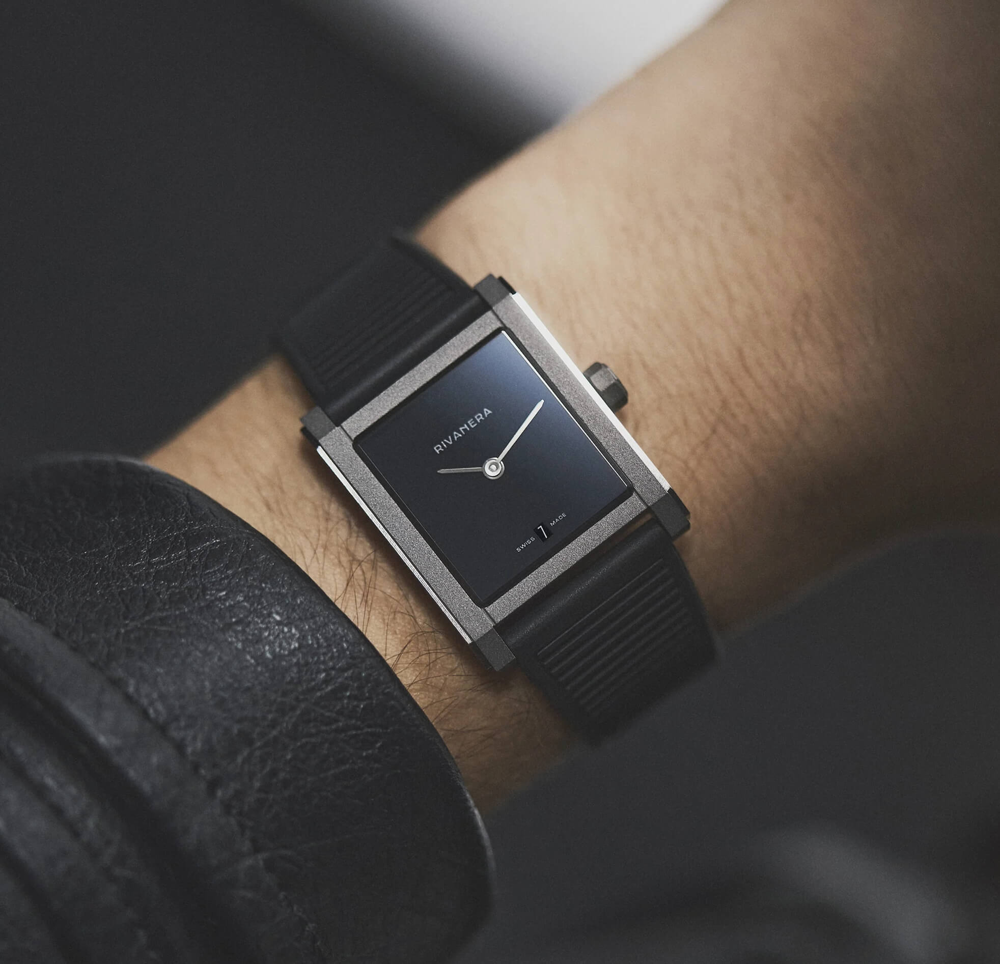
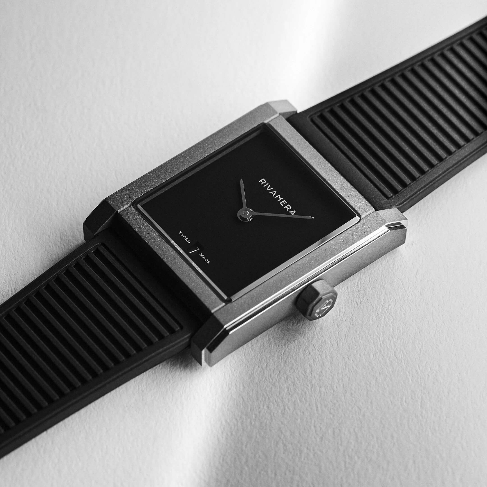
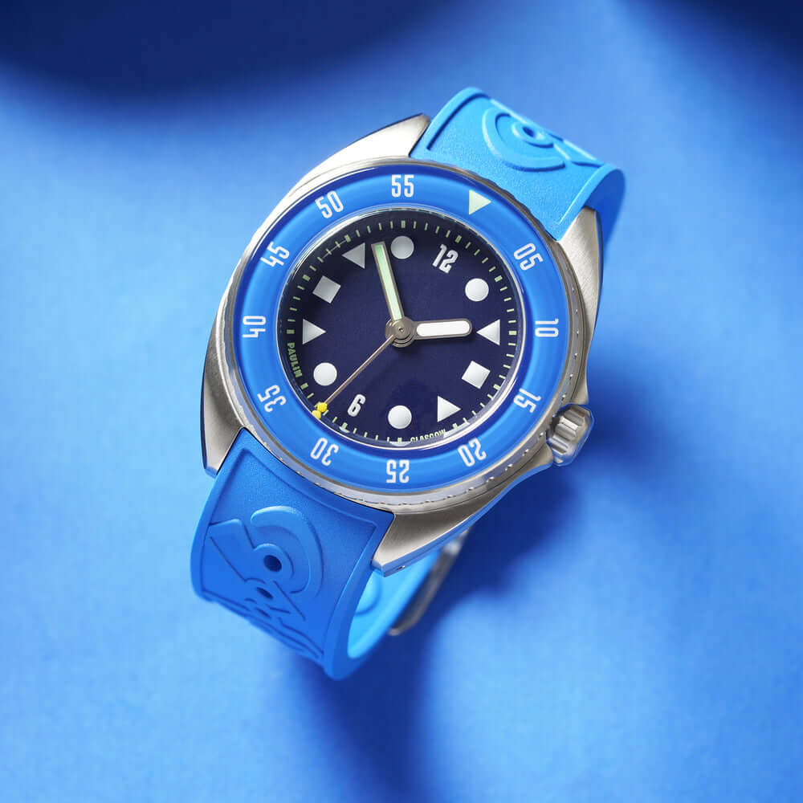
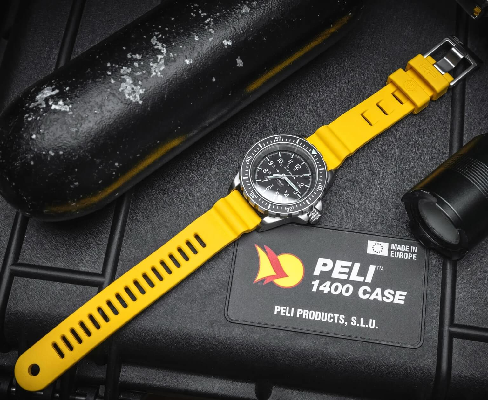
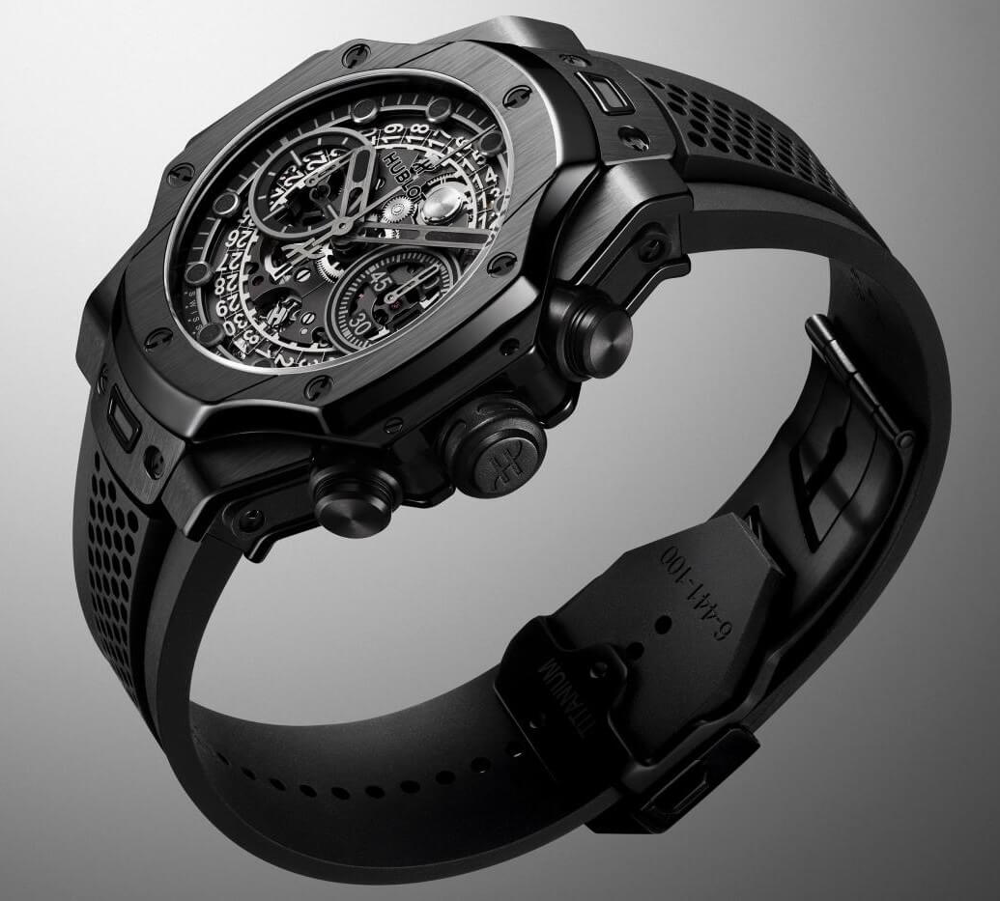
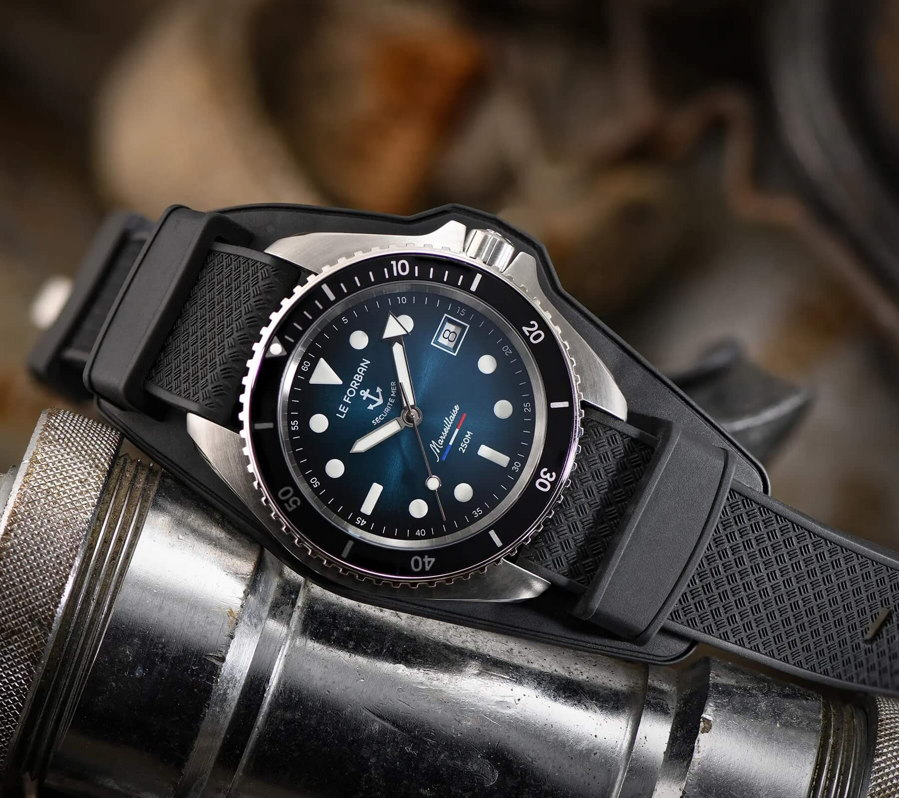

6 Awesome Rubber Strap Designs That Caught My Eye Recently
I love rubber straps. More than leather, for what it's worth. There's something about putting on a good rubber strap that feels right. To me, the fit is better, the practicality too, and very importantly for me: the lack of smell. As a fan of them, I get a kick out of seeing the designs and integration systems brands come up with. Some of them are wild, some are pedestrian, and some just make me go "yeah, that's nice." Here are six recent ones that caught my eye.
 Nenad Pantelic • March 17, 2026
Nenad Pantelic • March 17, 2026

1. Echo Neutra Rivanera Piccolo MB
I first heard about Echo Neutra on the Fratello Talks podcast, and they pitched this watch so well that I had to go check it out. Glad I did. The black ribbed rubber strap on the Rivanera Piccolo MB is fantastic. I love the texture, the tapering, and how naturally it fits the watch. The strap doesn't fight for attention, it just belongs there.
And the really cool part? There are design elements on this strap that are basically invisible until you see them. They add character and depth without being loud about it. You notice them when you look closely, and then you appreciate them even more. Great work by Echo Neutra.

2. Arken Recoil Strap
Arken's Recoil strap comes in several colors, but the orange one is the one that did it for me. The color is just right: not too punchy, not too muted. It has presence without being loud. I also love the grooves and how they follow the contours of the watch case, almost like the strap and the case were carved from the same block.
And Ken, the man behind the brand, clearly went overboard making sure the integration between strap and case is spot on. That doesn't surprise me. As a listener of the Form & Function podcast, I've heard time and again about Ken's obsession with delivering only top-quality solutions. He genuinely listens to his community and goes above and beyond to give them something special.

3. Paulin Mara
The rubber strap on the Paulin Mara is lovely. The blue color is rich and saturated, and the brandname script on the top surface is done with real restraint. It is there, but it doesn't feel tacky or try too hard to be noticed. The strap-to-case integration is also really well done, everything flows together as one piece.
Now, I have to say: I feel like some reviewers missed the point of this watch. They took the Mara's awesome personality and reduced it to comparisons with remote controls and PlayStation gamepads because of the markers and design elements. That's a shame, because there's a lot more going on here than that. The Mara has real character, and the strap is a big part of what ties the whole package together.

4. Divecore HP Strap
This one is designed and developed by divers, for divers, and yes, for us desk divers too. The Divecore HP strap is loaded with details. I love the narrow spacing between the adjustment holes, which gives much finer control over fit. The curved edges feel comfortable, the vented holes help with breathability, and the keepers are thicker than usual, which gives a sense of solidity.
The tapering sections are well considered, and the refinement of their signature Mono-accordion design gives needed flexibility. It's one of those straps where you can tell every decision was made for a reason.

5. Hublot Big Bang Unico SR_A
This one is something else. The black strap with mesh sections on the Big Bang Unico SR_A is super tech-forward, and the way it integrates with the complex case is just awesome. It looks incredible, it uses a deployant clasp, and the whole thing screams high-tech in the best way possible. This is something Batman would wear.
Now, if the mesh concept feels familiar, well we saw a similar approach with Rubber B's The Dream Concept strap. It's cool to see big brands taking inspiration from ideas like that and running with them on this scale.

6. Le Forban Marseillaise
And then there's the Le Forban Marseillaise and its rubber bund strap. Yep, a rubber bund strap. Now we've seen it all. Reviewers mention that it is a comfortable, robust, and that patterned FKM rubber feels great on the wrist. The rubber pad has a round cutout to display the logo, and it's asymmetrically shaped to fit the crown guards on the right side.

More to Come
Of course, it's not just the watch brands coming up with cool stuff. The solo strap market is full of great designs too, and brands like Anchor Straps and Artem Straps keep introducing new products that are worth paying attention to. It's a fun space to follow, and I can't wait to see what comes next, especially with Watches and Wonders just a few weeks away. If something nice drops there, you'll hear about it here, that's for sure.